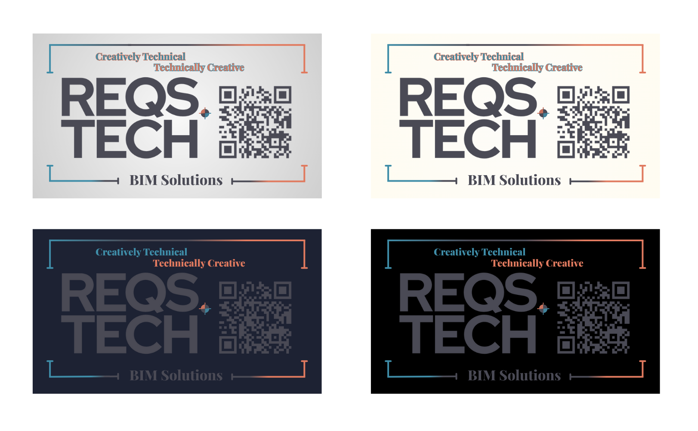
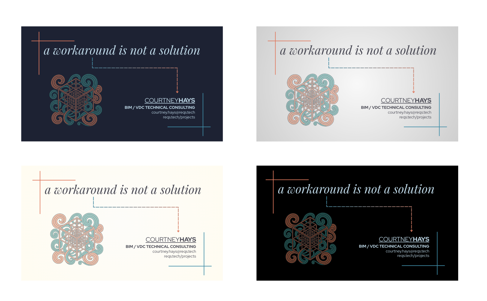

These four versions of the REQS.tech business card are displayed together on a unified background to reflect the real constraints and affordances of print — a material world where transparency doesn’t exist and layering has limits.
In digital contexts, identity can float, fade, and shift dynamically. But in print, a design must land. It has to commit. This presentation explores how each layout adapts to the fixed dimensions of physical media while still evoking the same layered intent.
The soft gradient backdrop evokes pearl and silk matte stocks, hinting at future production possibilities. And by anchoring all versions to the same visual plane, the layout reinforces a core message of this brand: technically grounded, creatively fluid.
This business card design process helped refine REQS.tech’s aesthetic direction. It was a hands-on exercise in balancing technical clarity with visual voice — one that now informs every design decision from color palette to typography to tone.

Four explorations of the REQS.tech identity—anchored in print, layered with intent.

Two front layouts explore visual tone—one geometric and modern, one classic with space to breathe.